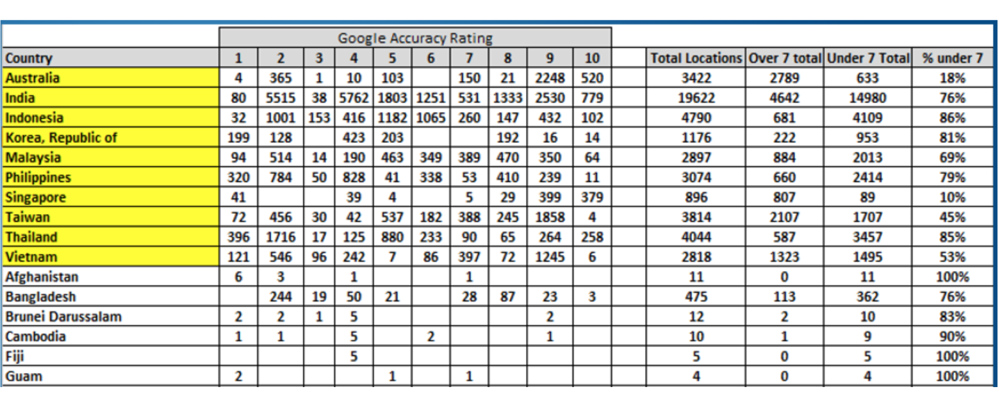

Intel Retailer Onboarding
Problem
Intel is a global company with product retailers in nearly every country. On the Intel Technology Provider (ITP) registration form, the address template format did not allow for a variety of global address structures, resulting in poor data quality and geocode accuracy which is used for location services to provide local resources, training, and support.
Solution
The generic address fields were removed and replaced with the google address API which allows the user to put in first a country, then address fields specifically relevant to their country. If their business location does not have a written address, they can use the language-agnostic google maps interface to place a pin onto the location of their business. The pin is captured by GPS coordinates and recorded in the backend on form submit.
My Role
This was a complex project involving B-Channels (an agency who did initial user research), our internal sales/marketing + development teams, and Razorfish. I worked to create the user flows, personas, and mockups based on my knowledge of our user base and the research documents. I gave these requirements to Razorfish, and collaborated in client meetings as we iterated on the prototype. I also coordinated with our internal dev team. Finally, I played a role in the Q/A process to ensure the acceptance criteria were met and coordinated translation and release of the new webpage with my counterparts in all other world regions.
Research
Discovery
Understanding the Problem
B-channels, in collaboration with our sales team, provided data for me to kick-start an analysis and create the first iteration of how our users' new journey might look.
Intel’s existing ITP registration form has a standard address template for all countries worldwide, which does not allow for non-traditional formatted addresses.
The Old Form was difficult to use outside of North America
-
Some Countries do not have States / provinces that are used regularly in addresses, so business owner may not know this field and will put something random (Incorrect data!). Or they leave it blank (incomplete data!)
-
Spelling of some streets/districts/ other address elements can be misspelled as the language is mostly spoken, or there are different dialects. We often find different character-sets with different accent marks.
-
Business may not have a formal address at all! (ie. The way they identify themselves is “across from the McDonalds”)
-
There may need to be more than 2 lines for an address
Problematic State of Data
The charts below display the meaning of each google accuracy rating (circa 2015), as well as our customer-entered data by country. The highlighted ones were the target of improvement
Users and flows
What our users' journey looks like
Our ITP Partners come from many countries and cultures. But they all have one thing in common - they want to know more about the products they sell and get rewarded for selling them!
I took some time researching partner companies and came up with some basic user types and defined their reason for engaging with our program. Finally, I visualized their journey through our system using Axure.
Interaction Design
Merging Existing and New
How to nestle new steps into an existing process
To create a wholistic view of the project, I mapped out our current process including all the layers of databases (CIM and ERPM), front end (AEM), and user areas and where they would interact. Welcome to the world of corporate lingo :)
UI Markup
Demonstrating changes to User Steps
Before sending the requirements out to Razorfish to design according to specific Intel design rules, I took the existing form and added steps such as:
- Search for existing company
- Adding a new company
- Choosing a physical location not found by google maps API
Hacking the flow into an animated slideshow, I presented the vision to various stakeholders at all business layers of this project.
Search for Company Before Creating a new one
Choosing a company location Not Found on Google maps
Trying to be clear as possible, I handed the material to our team handling the external agency communications and tried not to hold my breath too long before they came back with a first iteration, hopefully somewhat in the frame of what I had laid out.
credit: DeviantArt
Project Iterations
High Fidelity Tweaks
Providing feedback and adjustments
Three rounds went into the final version where I provided change requests to improve the user flow through the form and reduce abandon rates.
Add Search Module. It was important to narrow by country and city due to search time performance. Too many options would bog down the site if we didn’t ask for those filters.
Show three search results with an option to see more if any. Showing all results requires more attention from the user and clutters the screen. On a mobile device, it would require lots of scrolling.
Back to search link. Without it, our users would struggle to navigate back and forth through the form.
When deciding to create a new business because they can’t find it in the search, we auto-fill the fields we ask for in the search. Simple but significant time-savings, since most users want to add what they tried to search for.
Once we had an acceptable prototype, our front end team in India took the baton. My role at this point was to meet up with their product owner periodically to see if they needed any clarification or needed to compromise on the design.
Q/A
Lab Time
Tablets, Phablets, Phones, and breaking things.
As soon as the front end team had a testable coded beta version up and running, I recruited coworkers or really just anyone who wanted to have fun in the lab with me.
We rolled out the cart with a bunch of diffently sized devices and went to work seeing if the interface would break at any point in the process.
I found this work pretty dang fun, but I was naive to hope they would fix every little perfectionist problem I found :D
Examples of select issues
The Icons were cut off (they should be checkmarks when the requirements are filled.)
The address and the pin are not syncronized! The pin should reflect the most accurate address that the google API can return.
Conclusion
Reflection
How did it go?
In the grand scheme of things, I think this project was impactful, and helped bring our sign-up page up to standards in branding and responsiveness. It also changed the type of data we colleced, and made it smoother for people already part of a company to enroll.
However, the length of time it took to roll out the project was definitely more waterfall-style, especially in the way it was rolled out. There were more moving parts than I thought was necessary, with way too many time-zones involved which made communication challenging.
Lessons Learned
If I went back, how would I do it Differently?
- I would have pushed for more user testing (with users who would actually use the form)
- I would liked to measure results of the new onboarding page to see efficiency of the solution.
- I would have done a beta version and tried it on the countries we were trying to improve location accuracy instead of rolling it out across the world all at the same time.